WPHI 利用者ガイド
PHI のクライアント WPHI の使い方
PHI のクライアント WPHI の使い方
このガイドは、v6 プロトコルに対応したサーバ(朱蓮 SYUREN など)で、WPHI の「モダン」の画面を使う前提で書いています。
v6 に対応していないサーバと、Philly と同じ「クラシック」の画面は、クラシックの画面と、v6 でないサーバにまとめています。
HP バーや店の窓など、v6 のサーバの中でも新しい版でだけ使える機能があります。その機能の所に、新しい版の時だけ使える事を書いています。
画像は説明の為に作った架空の世界とキャラで撮りました。実際の世界では、その世界のマップチップとキャラグラで表示します。
初めての人は、上から歩くの節まで読めば、接続して歩き出せます。
その先は遊びながら必要な節を読み、キーと設定はキー操作の一覧と設定の表で引いてください。
WPHI のページの「最新の版を取得する」から、OS に合ったファイルを取得してください。
Windows・macOS・Linux の版があります。
どのファイルも署名していないので、初めて開く時に OS が警告を出します。
開き方は WPHI のページの「初めて開く時」に書いています。
新しい版が出ると、起動した時に知らせます。
メニューの「ツール」→「新しい版を確かめる」でも確かめる事が出来ます。
このガイドは、メニューの「ツール」→「利用者ガイド(ブラウザで開く)」で開きます。
初めて起動すると、キャラを選ぶ画面になります。
2 回目からは、前回開いていたタブのキャラへ自動で接続します(設定の先頭で切る事が出来ます)。

キャラを 1 人も登録していない時は、画面の一番上に始め方の案内と、キャラグラとマップチップを取得するボタンを出します。
始め方は3つあり、画面の上からこの順に並んでいます。
*.chara のあるフォルダ)を入れ、「取り込む」を押してください。登録していたキャラを取り込み、Philly のキャラグラとマップチップもそのまま使います。設定は取り込まないので、続けて設定の「Philly.ini から取り込んで保存」を押してください
世界の一覧は、新規接続の設定を配布元から自動で取得して作ります。
一覧に無い世界は、サーバとポートを直接書いてください。
登録したキャラの「接続」を押すと、そのキャラでタブが1つ開きます。
上の「＋」で別のキャラのタブを開けば、同時に何人でも遊べます。
Philly のフォルダが無い場合は、キャラグラとマップチップを配布元から取得してください。
メニューの「ツール」→「キャラグラとマップチップを取得する...」で開きます。

世界のマップチップが見つからない時は、WPHI に同梱した PCGL の汎用のマップチップで描きます。
床に落ちている物の絵も、同梱した PCGL の物を使います。
接続すると、地図を窓いっぱいに出し、その上に地名・HP・MP・ログを重ねます。

| 場所 | 表示する物 |
|---|---|
| 一番上 | タブ。キャラごとに1つ開きます。× で切断して閉じ、右端の「設定」で設定を開きます。裏のタブに発言が届くとタブの色が変わり、裏のタブのキャラの HP か MP が減ると名前の前に ♥ を付けます |
| 真ん中 | 地図。真ん中が自分です。窓を広げた分だけ、見える範囲が広がります(地図の表示) |
| 左上 | 地名と、HP・MP のバー。毒やパニックの時はバーの色が変わります。設定で、経験値、所持金、レベル(Fighter・Wizard・Merchant・Creater)も出せます |
| 右上の丸いボタン | 左からステータス、カバン、方角です。ステータスを押すと、ステータスを詳しくログに出します。カバンはカバンの節で説明します。方角は北固定の地図では上が北で、回転する地図では向きに合わせて針が回ります |
| 右下 | 魔法の列。覚えている呪文をアイコンで並べます(魔法の列) |
| 左下 | ログ。発言や出来事を時刻付きで出します。左上の「全部・発言・戦闘」で出す行を絞り込み、右上の「小・中・大・全」と右端のドラッグで大きさを変えます(ログ) |
| 一番下 | 切り替えのボタン(大声、エリア、全タブ発言、ログを固定、ログ保存、保存先、priv)と入力欄。入力欄に発言やコマンドを書いて Enter で送ります(発言と priv) |
キーは、入力欄にいる間は文字を書き、ログにいる間は歩く・拾う・唱えるなどの操作に使います。
これは Philly と同じです。
テンキーか矢印キーを押している間、その向きへ歩きます。
入力欄にいる時は文字を書くので、歩く時は Esc でログへ移ってください。
v6 のサーバで北固定の地図の時は、設定の「スムーズ移動」(既定でオン)で、キーを押した瞬間に歩き出し、地図を滑らせて1マス進みます。
押している時間に合わせて、0.1 秒ごとに1マスずつ途切れずに進みます。軽く押せば1マス、0.25 秒押せば3マスです。
設定の「歩き出し」のスライダーで、歩き出しの重さを 5 段で変える事が出来ます。重くすると歩き出しがゆっくりになり、軽く押した時に少しだけ進みます。
軽くすると歩き出しが速くなります。押し続けた時の速さはどれも同じです。
サーバが新しい版なら、斜めの1歩も縦横と同じ速さで進みます。古い版のサーバでは斜めの1歩を縦と横の2歩に分けて送るので、斜めは少し遅くなります。
v6 のサーバでは、見た目は道でも通れないバリアーが自分の近く(3マス以内)にあると前もって分かり、当たる前にその場で揺れます。
殴る相手(対象)を決めておくと、Space などの攻撃で対象の方を向いて殴ります。
対象を決めていない時の攻撃は、Philly と同じく向いている先の隣を殴ります。
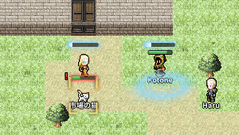
v6 のサーバが新しい版なら、キャラの頭の上に HP バーと詠唱バーも出します。
ログに流れた発言や戦闘の行を読み取り、地図のキャラの上に吹き出しや数字を出します。
メニューの「表示」→「吹き出しと HP・MP の増減をマップに出す」で切り替えます。
v6 のサーバが戦闘の行に添えて、攻撃した側と受けた側の位置を送る時は、その位置に演出を出します。
同じ名前の敵が並んでいても、当たった敵に出します。演出の色は、武器や呪文の属性で変わります。

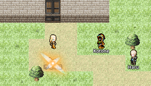

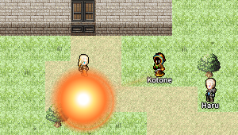


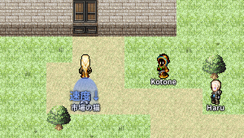
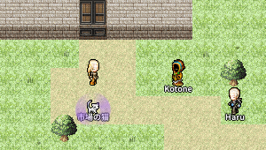
位置を送るサーバでは、呪文を唱えている間、唱えている人の足元で魔法陣が回ります(対象と攻撃の画像の Kotone)。
数字と文字の演出はログの文面から決めています。サーバによって文面が違うと、出ない演出があります。
位置を送らないサーバでは、ログの名前でキャラを探します。同じ名前のキャラが複数いる時は、自分に一番近いキャラに出します。
ログは、発言や出来事を時刻付きで出します。
文字は白に黒の縁取りで、色の付いた文字は地図の上で読めるよう薄い色にします。
ログは上へスクロールして読み返せます。
上へ戻している間に新しい行が届いても、表示は動きません。
ログの左上の「全部・発言・戦闘」で、ログ欄に出す行を選びます。
選んだ物は覚えておき、次に起動した時も同じ絞り込みで出します。
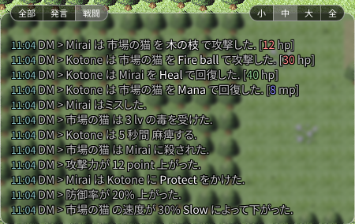
戦闘の行は、ログの文面から見分けています。
サーバが発言の種類を送る時は、それを使って見分けます。スイッチの案内は発言に入れず、NPC の台詞は発言に入れます。
Ctrl+F(macOS は Cmd+F)で、ログの右上に検索の欄を開きます。
メニューの「操作」→「ログを検索」でも開けます。

探せるのはログ欄に残っている行だけです。
古いログは、ログを保存しておけばファイルで探せます。
入力欄に書いて Enter を押すと発言します。
Shift+Enter で改行し、Ctrl+Enter でパーティに発言します。
& を付けて送ります)。大声とは同時に選べませんpriv を受けると、相手ごとに小さな窓を開きます。

地図ですぐ隣(上下左右)にいるキャラを左クリックすると、メニューが出ます(画像はパーティの節)。
「パーティに誘う」と「ついて行く」はパーティで説明します。
隣のキャラのメニューで「話す」を選ぶと、その NPC に言える言葉をボタンに並べた会話の窓を開きます。
ボタンを押すと、その言葉を話します。
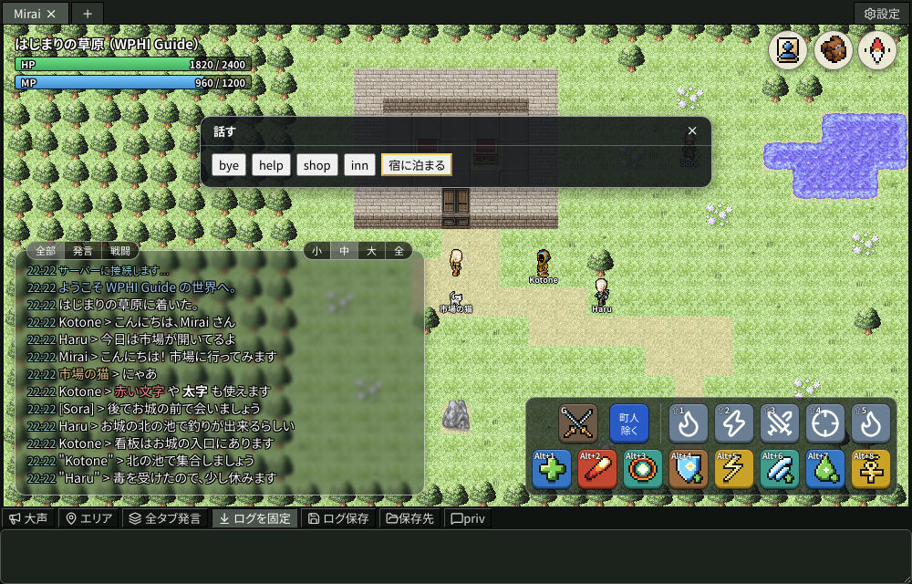
Z(拾う)や X(置く)、cast などで、サーバが番号を選ぶ一覧を返すと、ログの上に一覧の窓を重ねます。
行の頭の (1)〜(9) が、その行を選ぶ番号のキーです。
| キー・ボタン | 動作 |
|---|---|
| 1〜9 | その番号の行を選んで送る。続きがある時の 9 は「More」と同じ |
| Space | カーソルの行のチェックを切り替えて、次の行へ |
| ↑、↓ | カーソルを動かす |
| Enter、「O K」 | チェックした行の番号をまとめて送る。チェックが無ければカーソルの行を送る |
| -、テンキーの +、「全部」 | 全部の行にチェックを付ける。全部付いていれば外す。Enter で送るので、拾う・置くで 1〜8 を一度に選ぶ事が出来ます |
| 0、Esc、.、←、→、「Cancel」 | 取り消す |
| 「More」 | 続きのページを足す(続きがある時だけ押せる) |
| 行のダブルクリック | その行を送る |
v6 の世界では、地図の右下に覚えている呪文をアイコンで並べます。
アイコンを押すか、Alt+1〜8 で左から順に唱えます。
F1〜F7 も、左から 1〜7 番目を唱えます。
魔法の列が無い世界(v6 でない世界)では、Alt+1〜8 と F1〜F7 は、所持魔法の 1〜8 番目(F キーは 1〜7 番目)を唱えます。
右上のリュックのボタンか、E キーか、メニューの「行動」→「カバンを開く」で、カバンを開きます。
v6 の世界では、カバンは世界ごとに使える無限バッグです。
手持ちの 8 個と、どこからでも出し入れ出来るカバンの中身(インベントリ)を、絵で並べます。

物を1つ選ぶと、詳しい情報の下に操作のボタンを出します。
| 選んだ物 | ボタン |
|---|---|
| 手持ちの物 | 「使う」「装備する」(装備中なら「外す」)「カバンに入れる」「置く」。装備中の物は、カバンに入れる事も置く事も出来ません |
| カバンの中の物 | 「使う」「装備する」「手持ちへ出す」「置く」。使う・装備するは、手持ちの空いた枠へ出してから行うので、手持ちに空きが無いと押せません。置くは手持ちを通さずに足元へ置き、店の前なら置いた物を店が買い取ります |
| カバンの中に同じ名前の物が 2 つ以上ある物 | 上に加えて「同じ物を全部置く」 |
| カバンの中の物(別の行の赤いボタン) | 「捨てる」と、同じ名前の物が 2 つ以上あれば「同じ物を全部捨てる」。捨てる前に確かめます |
「カバンの中」の右の「選ぶ」を押すと、選択モードになります。
カバンの中の物を押すとチェックが付き、もう一度押すと外れます。
下の欄に、最後に押した物の詳しい情報と、選んだ物の名前(同じ名前は「×数」)を出します。
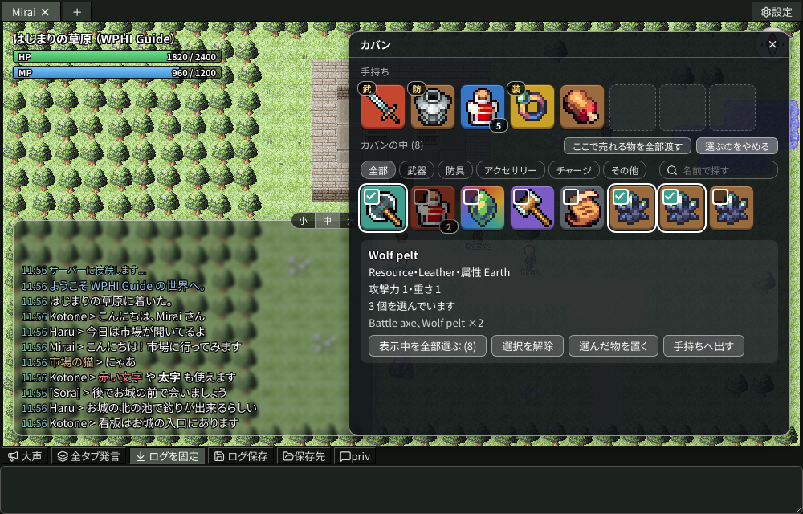
カバンの「足元」の右の「足元を見る」を押すと、足元に落ちている物を、手持ちと同じ絵と名前で並べます。
物を選ばなくても、行のボタンで拾えます。
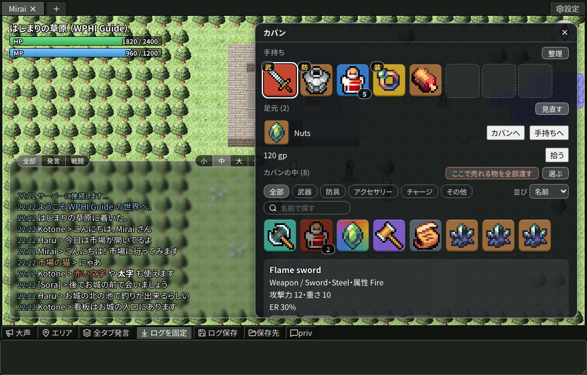
v6 の世界で店の売り場のマスに乗ると、そのマスで売っている品と値段を、地図の上の店の窓に出します。
品は持ち物と同じ絵で並べ、カーソルを当てると詳しい情報が出ます。
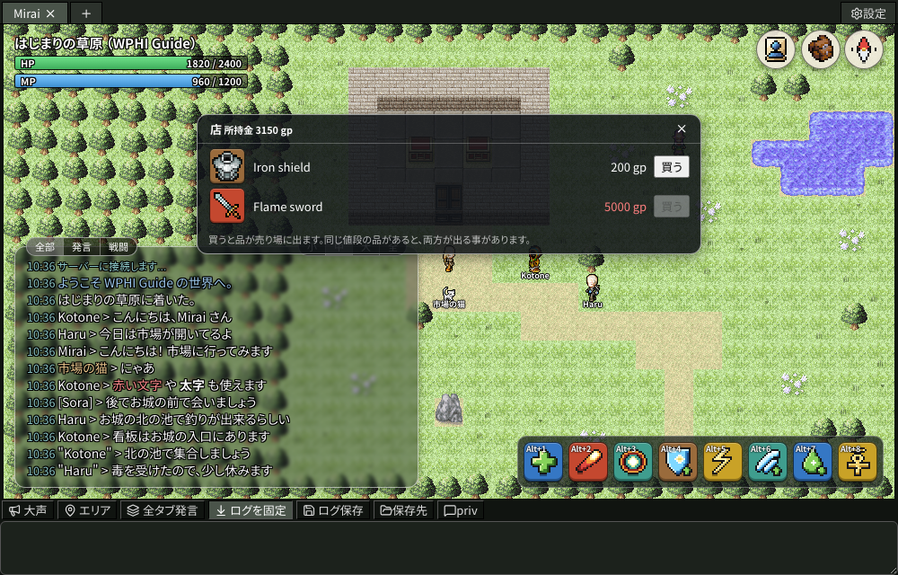
買い取りをしてくれる店の前のマスで、「カバンの中」の右の赤い「ここで売れる物を全部渡す」を押してください。
確かめる窓で「はい」を選ぶと、その店が買い取る物だけを、カバンの中と手持ち(装備中の物を除く)から全部渡します。
買い取らない物はそのまま残ります。売れる物が無ければ「ここで受け取ってもらえる物がありません」と出ます。
店が何を買い取るかは世界ごとに違うので、店の案内を読んでください。
メニューの「行動」にも、カバンの操作があります。
どれも、サーバが断った理由が見えるようにカバンを開いてから送ります。
後の 3 つは押し間違えると困るので、キーを割り当てていません。
カバンは、世界が持ち物の情報とインベントリを有効にしている時だけ使えます。
カバンの中身は、倉庫のマスに置いた物と同じです。
地図ですぐ隣(上下左右)にいるキャラを左クリックすると、メニューが出ます。
「パーティに誘う」を選ぶと、そのキャラの方を向いてから誘います。相手が y と答えると仲間になります。
同じメニューの「話す」「ささやく (priv)」「お金を渡す」は、隣のキャラのメニューで説明します。

パーティに入っている間は、右上のボタンの下に、仲間の名前と HP・MP の細いバーを出します。
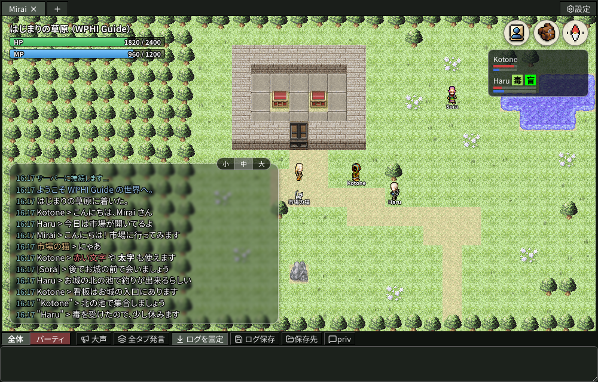
右上の小さな一覧か、メニューの「行動」→「パーティの一覧」で、パーティの窓を開きます。Esc で閉じます。

パーティに入っている間は、入力欄の上に「全体」「パーティ」のタブが出ます。
「パーティ」を選ぶと、ログ欄に仲間の発言だけを出し、Enter の発言が仲間だけに届きます。
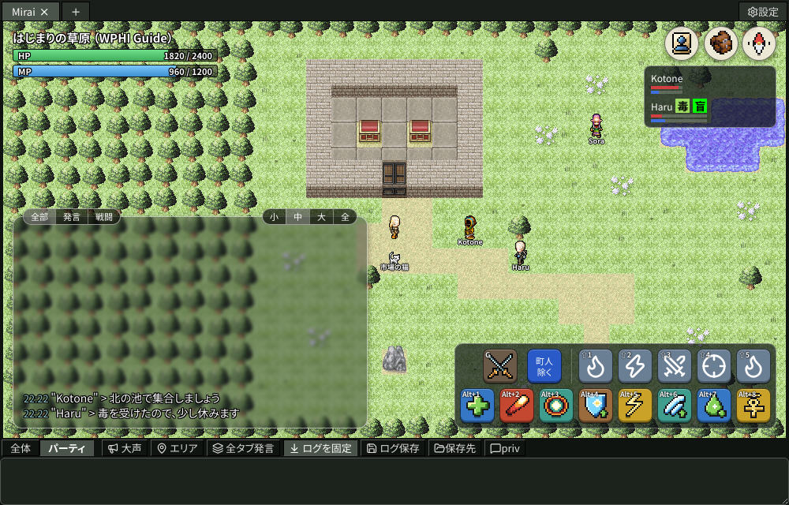
仲間の一覧、パーティのタブ、視界の外の仲間の矢印は v6 の世界でだけ出します。
隣のキャラを誘うメニューは、v6 でない世界でも使えます。
北固定の地図では、パーティの仲間が地図の外にいる時、地図の端にその方向の矢印と、名前と距離(マス)を出します。
回転する地図では出しません。
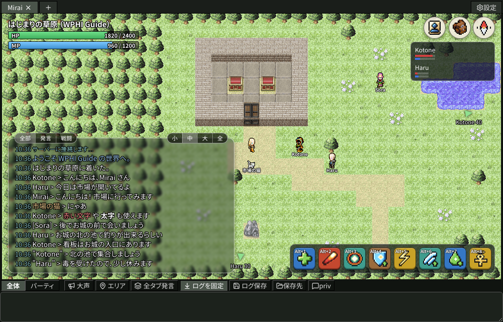
看板の前で A を押すと看板を読みます。
読んだ本文はログに流すのに加えて、地図の上に札として出します。
札の見出しには、その看板を書いた人と書いた日時を出します。

札は右上の ×、Esc、歩き出すと閉じます。
書くのは S、消すのは D です。
S で看板のエディタを開きます。
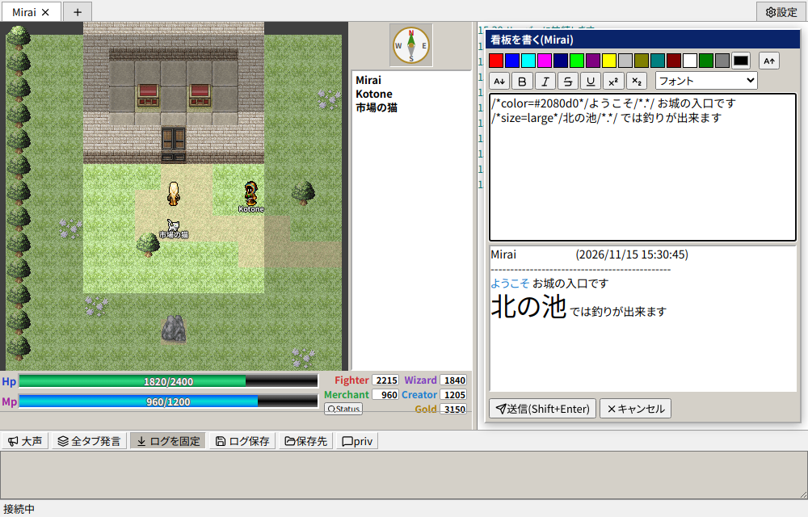
キー操作は Philly と同じで、WPHI で変えた所と足した所もこの表に入れています。
入力欄にいる時は文字を書くので、ここのキーを使う時は Esc でログへ移ってください(入力欄とログの行き来)。
| キー | 動作 |
|---|---|
| 移動と地図 | |
| テンキー、矢印(フルキー移動なら U I O J K L M 7 8 9) | 歩く(歩く)。2つの向きを同時に押すと斜め |
| - ; / '(フルキー移動の時) | テンキーの - + / * と同じ。置く、拾う、装備する、使う |
| Ctrl+テンキー、Ctrl+矢印 | 北固定の地図では、向きを変えずに進む。回転する地図では、その方角を向く |
| 地図でホイール(中ボタン)をクリック | 追尾移動の始めと終わり |
| T、Shift+T | 回転する地図、北固定の地図 |
| Shift+F5 | 地図の窓を出す、隠す |
| 行動 | |
| Space、テンキー1 | 攻撃。対象を決めていれば、対象の方を向いて殴るか、1歩近づく(対象と攻撃) |
| G | 近いキャラから順に対象にする |
| Shift+G | 自動攻撃を始める、止める |
| 地図のキャラを右クリック | そのキャラを対象にして殴る |
| Z、X、C | アイテムを拾う、置く、使う。一覧が出たら番号で選ぶ(一覧) |
| V | 手持ちを整理する(sort) |
| Q、W | 一番強い装備にする、装備を外す |
| E | カバンを開く(カバン) |
| M、テンキー0 | ステータスを見る(check と look) |
| A、S、D | 看板を読む、書く、消す(看板) |
| P | 金額を聞いてお金を払う |
| 魔法 | |
| Alt+1〜8 | 魔法の列の左から 1〜8 番目の呪文を唱える(魔法の列) |
| F1〜F7 | 魔法の列の左から 1〜7 番目の呪文を唱える |
| R | 魔法の一覧(spells) |
| テンキー3、テンキー Enter | cast |
| Alt+W、Alt+E など | 系統魔法(Wizard eye、Eagle eye など)。どのキーが何の魔法かは、メニューの「魔法」に書いています |
| 一覧を出している間 | |
| 1〜9、Space、↑↓、Enter | 番号を選ぶ、チェック、カーソル、チェックした番号を送る |
| -、テンキーの + | 全部の行にチェックを付ける(もう一度で外す) |
| 0、Esc、. | 取り消す |
| 窓とタブ | |
| Esc | 入力欄からログへ移る。ログにいる時は、上に重なっている窓から閉じる(カバン、会話の窓、店の窓、パーティの窓、看板の札、priv の一覧の順)。閉じる窓が無ければ、ついて行くのをやめるか、対象を外す |
| Tab | 入力欄へ移る |
| Ctrl+Tab、Ctrl+Shift+Tab | 次のタブ、前のタブ |
| Ctrl+F(macOS は Cmd+F) | ログを検索(検索) |
| F8〜F12、Alt+G | 設定した言葉を送る(設定) |
| Pause、Shift+F1 | 強制切断 |
| 入力欄 | |
| Enter、Shift+Enter、Ctrl+Enter | 送る、改行、パーティに送る |
全部のキーはクライアントの要件と挙動の「キー操作」に書いています。
タブの右端の「設定」か、メニューの「ファイル」→「設定...」で開きます。
変えたら「保存」を押してください。保存せずに閉じる時は確かめます。

項目は 接続・移動・画面・ログ・魔法・キー の見出しで分けてあります。
| 項目 | 既定 | 内容 |
|---|---|---|
| 接続 | ||
| 起動した時に、前回開いていたタブのキャラへ自動で接続する | オン | 外すと、起動してもキャラを選ぶ画面のままになります |
| 別のサーバの世界へ移る時に、キャラの ID を送ってよいか確かめる | オフ | 違うアドレスかポートのサーバの世界へ移る時、移動先へキャラの ID を送ります。オンにすると、送る前に移動先を出して確かめます。5 分答えないと移動をやめます |
| 移動 | ||
| スムーズ移動、歩き出し | オン、標準 | 地図を滑らかに動かして歩くか、歩き出しの重さを 5 段から選びます(歩く) |
| フルキー移動 | オン | フルキーの 789 uio jkl m を移動に、- ; / ' を置く・拾う・装備・使うに使います(テンキーと同じ) |
| 画面 | ||
| モダンの画面の左上に出すステータス | HP、MP | HP、MP、経験値、所持金、レベル(Fighter・Wizard・Merchant・Creater)から選びます |
| 地図の拡大率 | 100% | v6 の地図と 7x7 の地図(v6 に対応していないサーバ)で別に選びます(地図の表示) |
| タスクバーの点滅 | オン | 発言と priv が届いた時に、タスクバーを点滅させます |
| ログ | ||
| ログを HTML で保存する | オン | オフならテキストで保存します(保存とコピー) |
| ログの行頭に時刻を出す | オン | 保存するログには、オフでも時刻を入れます |
| ログのフォント、ログの文字の大きさ | 空、0 | 空と 0 なら、スキンの書体と大きさを使います |
| 効果音 | オン | 決まった言葉がログに出たら効果音を鳴らします(Philly の SoundRegexp.ini と SoundFile.ini を使う) |
| ログの右クリックのコピー | タグ・時刻・名前を除くかなど。ログ欄の右クリックのメニューと同じ物です(保存とコピー) | |
| 魔法 | ||
| 系統魔法の前に武器を外す | オン | Alt と Shift+Alt の魔法を唱える前に武器を外します |
| 系統魔法の後に、外した武器を装備し直す | オフ | チャット場ではオフを勧めます |
| 超魔法メニューを、マスターでなくても出す | オフ | サーバの権限ファイルでマスターになった時に使います。超魔法メニューは、設定フォルダか、取り込んだ Philly フォルダの Config に MasterMagicMenu.xml がある時だけ出ます(WPHI には同梱していません) |
| キー | ||
| F8〜F12 | 空 | 押した時に送る言葉です。\n で改行します。「リスト表示中」の欄は、一覧を出している間に送る言葉です |
| Alt+G で送る言葉 | 空 | 押した時に送る言葉です |
設定とキャラの情報は、設定フォルダに置きます。
メニューの「ツール」→「設定フォルダを開く」で開けます。
設定フォルダにはキャラ ID も平文で入っています。
設定フォルダを他人に渡さないでください。
メニューの「表示」で、窓の形を3つから選びます。
ログの大きさのボタン、ログの絞り込み、ログの横幅のドラッグ、左上のステータス、魔法の列は、モダンの画面にだけあります。

v6 に対応していないサーバでは、地図は Philly と同じ 7x7 マスになります。次の物は使えません。